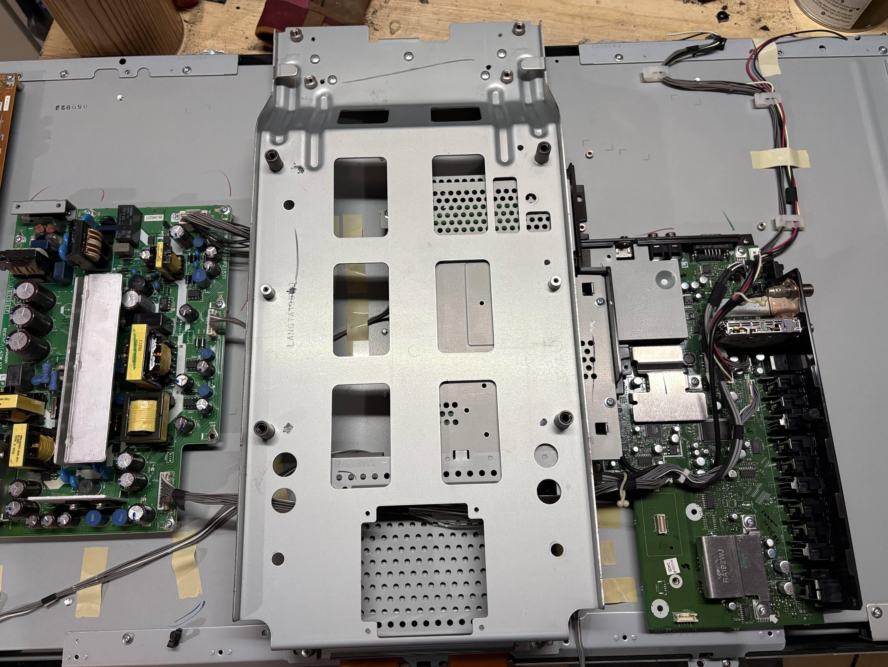
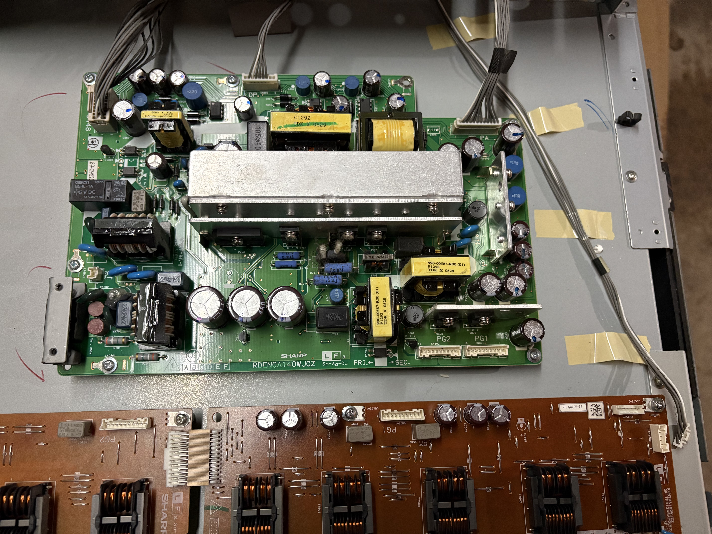
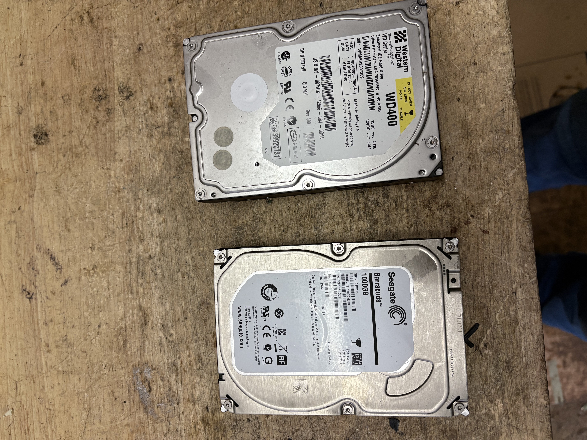
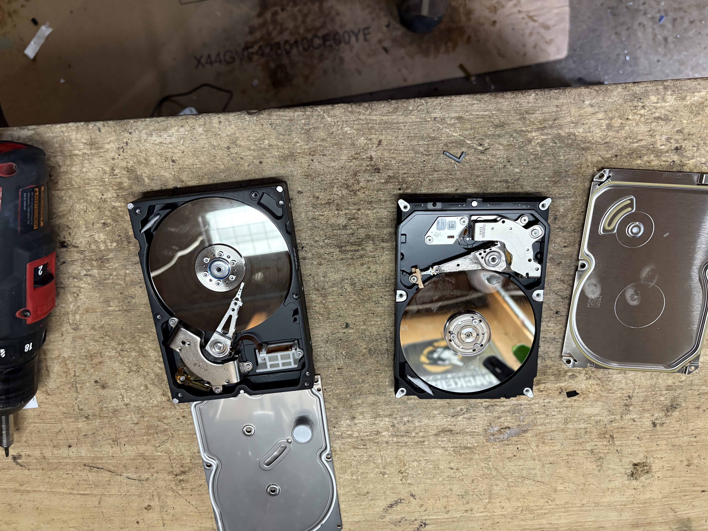
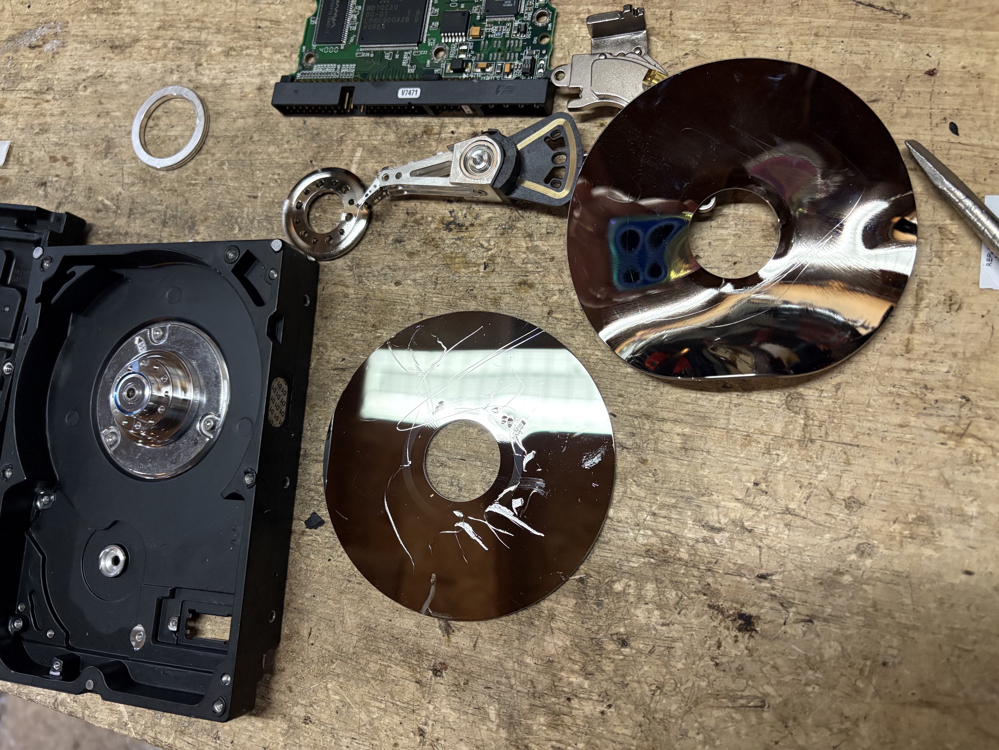

This page is for everyone who is looking to up their recycling game, this page will help you get started with the basics
It all starts at the drop off spot, which thankfully people have figured out after doing it a couple of times.
I get a lot of Printers, TVs, Laptops, Microwaves, Tower PCs, almost anything that plugs into a wall.
I take them into the garage, disassemble them, and sort the different metals found within.
Here's a little demo of what you can find in a TV:

This is what the inside of a TV can look like.
They can vary a lot, but they all have 3 circuit boards that make them work.
In the picture on the left, you can see two of them, the third is hidden by the metal plate that we use to mount to the wall.
In this picture, you can see the third circuit board that was hiding beneath the metal plate on the left. If you look closely, you'll see a bunch of tiny spools with copper inside them. We like those, mainly because copper is very common in electronics and goes for a pretty penny at scrap yards. So we like to take those, because they're worth the effort of taking them off of the spools.
We also like the wires that connect all of the circuit boards together, because they also have copper inside them, but the best part is that the scrap yards will just take the wire directly. If you want a bit of extra cash, you can strip the wires to get the bare copper, but I get so many wires that it's just not worth the effort.
The big piece of metal on the green circuit board on the left is a piece of aluminum, which we like. aluminum usually goes for a decent amount at the scrap yards.

Here is a close up of what the spooled copper looks like.
I usually take them off of the spool when I'm watching a packer game, or a different show when I'm taking a break from recycling, or waiting for more recyclables to be dropped off.
Hard Drive Demo:
These are hard drive cases. They are different in laptops, but they show up in tower PC’s and Server Racks. They are quite value as the hard drives themselves are made of aluminum or stainless steel.


Hard drives have disks (as seen on top), as well as circuit boards (as seen on the bottom). They’re a bit difficult to take apart when you’re first starting but after you take a few apart, you know that there are just a lot of screws, and there’s usually one hiding
The arms on the hard drives can also be scrapped, I don’t always take them apart because they can be a hassle sometimes, but if you’re more patient than I am, it’s usually worth your time.

Once the discs (drives) are removed I scratch them up and bend them to ensure the data of the people who send me their computers is unreadable. Many parts inside the case are aluminum which is why I take them apart.
Scrap Pickups:
Sometimes I go up to small businesses to pick up large orders that they wouldn’t be able to bring over themselves. I do this because I’m passionate, and want to help people declutter their lives from things that they might not know how to dispose of.
If you have a small business and would like to take up my recycling services, feel free to schedule a time for me to come pick up your recyclables.